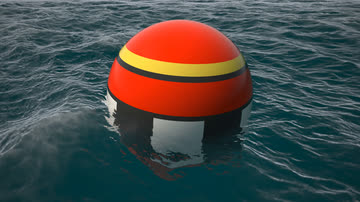
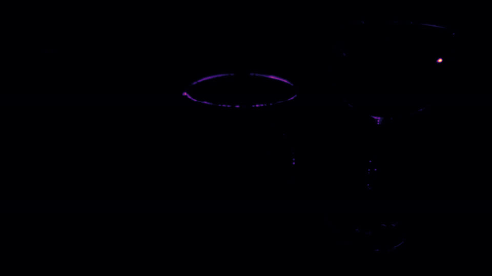

LLM-driven evolutionary search can propose many rendering-code optimizations, but each approximate candidate must still be validated across dynamic viewing, lighting, material, and temporal conditions. We use a backend-specific Primary Render Parameters Space (PRPS) to sample rendering conditions, and formulate candidate acceptance as a Bayesian sequential test over the rate at which FLIP error exceeds a user threshold. To reduce rendering work, the validator adapts an empirical SAFE decision threshold: globally from the observed distribution of rejected candidates, and per candidate from LLM-derived mutation embeddings compared with previously validated neighbors. Rendered evidence remains the acceptance basis; previous candidates only modulate how strict the sampled-evidence threshold must be before acceptance. Across Shadertoy shaders, MaterialX-generated GLSL materials, and two Godot shader settings, the pipeline finds 1.12×–2.28× speedups under stated error thresholds, while replay and live-pipeline studies reduce validation frames by 47–85% relative to conservative validation with few disagreements against conservative replay labels. The resulting contribution is an efficient sampled-validation mechanism for open-ended rendering optimizers, with guarantees defined over sampled PRPS evidence.
The search loop follows FunSearch and AlphaEvolve: an LLM proposes patches, and an island-based evolution keeps the fast ones. For rendering, correctness is perceptual, depends on viewing conditions, and can only be sampled. So we build the system around the validator.
Every dynamic input the application exposes (camera, time, lights, material inputs, environment) becomes one coordinate of a unit cube r ∈ [0,1]D. The validator samples the cube; a small adapter maps points to renderer state. D ranges from 1 to 34.
A frame is an exceedance if its FLIP error exceeds ε. With k exceedances in n frames, the rate p ~ Beta(1+k, 1+n−k). Accept when P(p < τ) ≥ γsafe, reject when it falls below 1−γhigh.
How much clean evidence acceptance needs is set per candidate. Mutations whose LLM embeddings resemble validated safe edits may stop early; risky ones stay at the conservative 99%. Rejection is never relaxed.

OriginalOurs|Error| ×20Clearly bad candidates are rejected within tens of frames. A few borderline ones, failing on 1–5% of conditions, need hundreds — and under one fixed 99% threshold every safe candidate pays that price: 916 renders.
Renders needed to accept a clean candidate
Posterior over the exceedance rate p
P(p < τ) as frames arrive
Eleven Shadertoy shaders, three MaterialX materials compiled to GLSL, and two Godot workloads, one of them an engine-internal render pass. All results use τ = 1%.
(a) Speedup of the best accepted program
(b) Validation frames vs. conservative, session replay
(c) Validation samples per candidate, live runs

// 4ltfDr (1.69×): audio-reactive second stage- intersectStage(surface, pp,- rotateMat(angle.x, angle.y, angle.z) * rot, scale);+ if (beat >= 32.0) {+ intersectStage(surface, pp,+ rotateMat(angle.x, angle.y, angle.z) * rot, scale);+ }
Domain reasoning: the second stage is invisible before beat 32, so it is skipped there. The same patch hoists loop invariants out of the fractal.
// Godot SSIL (1.66×): taps per quality preset, 2 depth samples each- const int num_taps[5] = { 3, 5, 12, 0, 0 };+ const int num_taps[5] = { 2, 3, 6, 0, 0 }; // plus: merged max/clamp pairs, reciprocal multiplies, // shared subexpressions across the sampling kernel
Approximate by design: about half the samples per pixel, within the error budget.
// lighthouse stripe pattern (example from the paper)- cos(atan(pos.x, pos.z) * 6.0)+ float r_inv = inversesqrt(dot(pos.xz, pos.xz));+ float c = pos.z * r_inv, c2 = c*c, c4 = c2*c2;+ // T_6(x) = 32x^6 - 48x^4 + 18x^2 - 1+ 32.*c4*c2 - 48.*c4 + 18.*c2 - 1.;
Math reasoning: cos 6θ is the Chebyshev polynomial T6(cos θ), so atan and cos disappear.
Each released session has a live report with timings, error distribution, the full diff and its generation history.
@misc{dereviannykh2026renderopt,
title = {Efficient Validation for LLM-Generated Rendering Optimizations},
author = {Dereviannykh, Mikhail and Klepikov, Dmitrii and Brucker, Hendrik and
W{\"u}st, Dominik and Krimmel, Benedikt and Dolp, Reiner and
Dachsbacher, Carsten},
year = {2026}
}